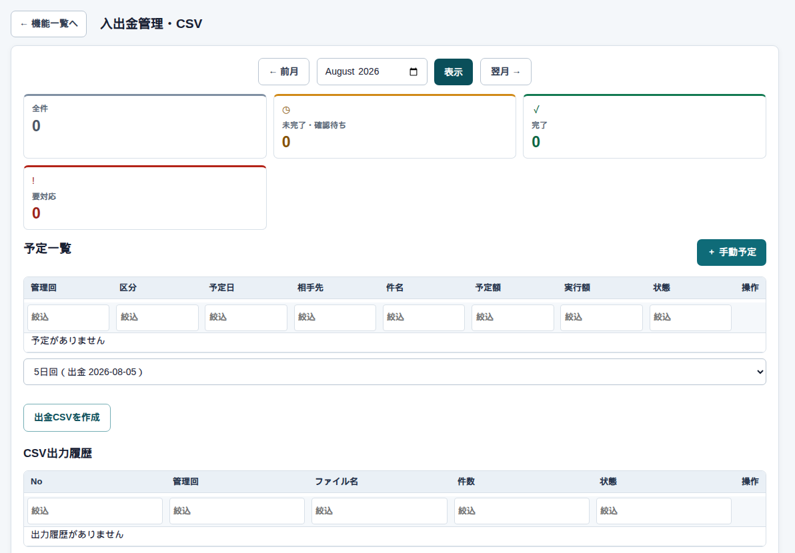

精算 → 入出金管理・FB出力
入出金管理・FB出力
まず、この画面
管理回ごとの入金・出金の予定と実績です。カレンダーと一覧を切り替えます。管理者・経営者・総務が使います。

何をどこに入れるか
| ここ | 何をするか |
|---|---|
| 実績 | 入金した・振り込んだ日と金額 |
| 調整台帳 | 口座の期首残高や、自動では乗らない調整。請求・支払・先払の自動反映とは別 |
| CSV | 銀行向けの出金ファイル。正式FBは後続 |
よくある使い方
25日回の振込を出す
対象月と回を合わせ、出金予定を確認してCSVを出力します。土日祝は営業日にずれます。
気をつけること
確定を取り消すと、まだ動いていない予定は消えます。再確定しても同じ予定は復活せず、新しい予定になります。